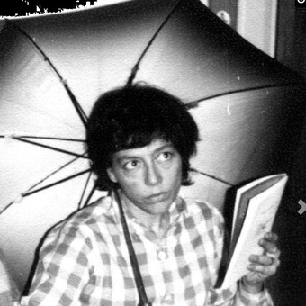
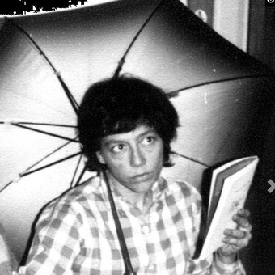

Biografía
Charles Bukowski (1920-1994) fue un influyente escritor y poeta estadounidense conocido por su estilo directo y crudo que exploraba la vida cotidiana y las experiencias de la clase trabajadora. Nacido en Alemania, se trasladó a Los Ángeles en su juventud, donde creció en un entorno difícil marcado por la pobreza y la violencia. A lo largo de su vida, Bukowski trabajó en empleos mal remunerados, enfrentó el alcoholismo y tuvo relaciones tumultuosas, experiencias que se reflejaron en gran medida en su obra literaria.
Su carrera literaria despegó en la década de 1960, cuando sus poemas y cuentos comenzaron a aparecer en revistas literarias underground. Alcanzó reconocimiento público con obras como "Factotum" (1975) y "Mujeres" (1978), que exploran su vida y experiencias de manera semiautobiográfica. A lo largo de su carrera, Bukowski continuó escribiendo sobre la vida ordinaria con un estilo sin adornos, ganando seguidores por su honestidad y perspectiva única.
Charles Bukowski falleció en 1994 en San Pedro, Los Ángeles, dejando un legado duradero en la literatura contemporánea por su enfoque distintivo y su mirada cruda a la realidad.
Bibliografía
Novelas y Relatos:
- "Post Office" (1971)
- "Factotum" (1975)
- "Women" (1978)
- "Ham on Rye" (1982)
- "Barfly" (1984)
- "Hollywood" (1989)
- "Pulp" (1994)
Poesía:
- "Flower, Fist, and Bestial Wail" (1959)
- "It Catches My Heart in Its Hands" (1963)
- "Crucifix in a Deathhand" (1965)
- "The Days Run Away Like Wild Horses Over the Hills" (1969)
- "Love is a Dog From Hell" (1977)
- "You Get So Alone at Times That It Just Makes Sense" (1986)
- "The Last Night of the Earth Poems" (1992)
Cuentos y Ensayos:
- "South of No North" (1973)
- "Erections, Ejaculations, Exhibitions, and General Tales of Ordinary Madness" (1972)
- "Hot Water Music" (1983)
- "Shakespeare Never Did This" (1979)
- "The Most Beautiful Woman in Town & Other Stories" (1983)
Correspondencia:
- "Letters to Jean" (1998)
- "Reach for the Sun: Letters 1978-1994" (1999)
- "Beerspit Night and Cursing: The Correspondence of Charles Bukowski and Sheri Martinelli 1960-1967" (2001)
Citas
"No estoy aquí para decirte lo hacer. Estoy aquí para decirte lo que he hecho, lo que he encontrado que funciona y lo que no funciona. Nadie más puede decirte lo que debes hacer."— Charles Bukowski
"No hables de grandes cosas. Haz pequeñas cosas con gran amor."— Charles Bukowski
"La vida es corta, frágil y, a menudo, absurda... y después se acaba. Pero mientras dure, sigue siendo maravillosa. No la ignores por completo, o te perderás el sentido de la misma."— Charles Bukowski
Fotos

 
